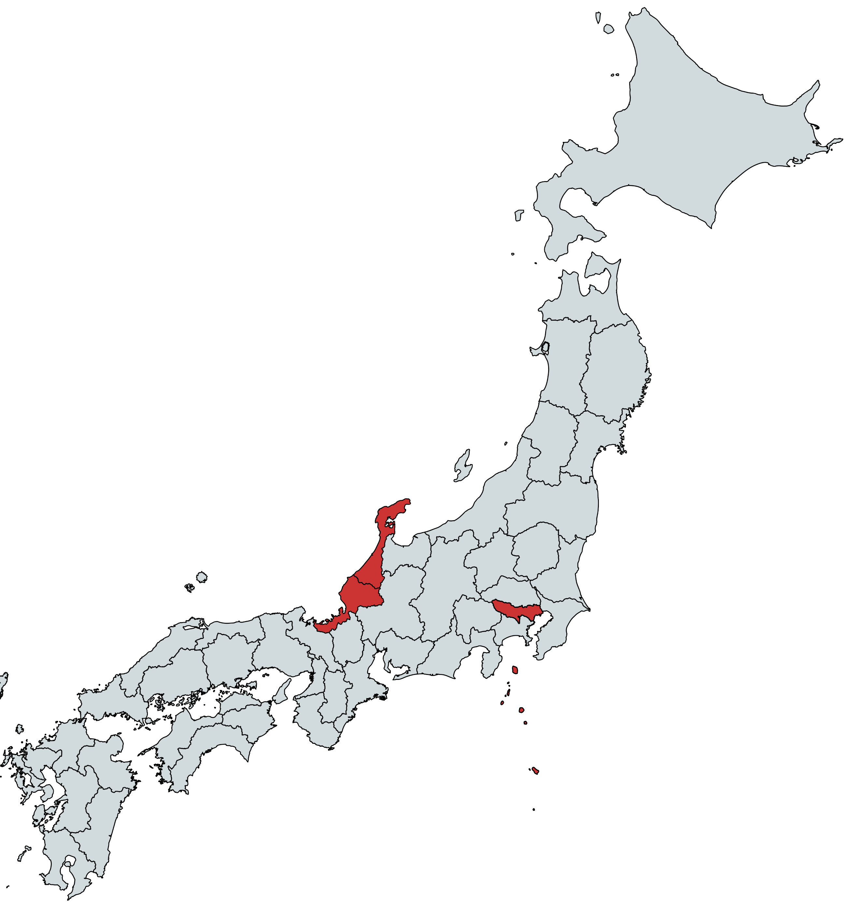
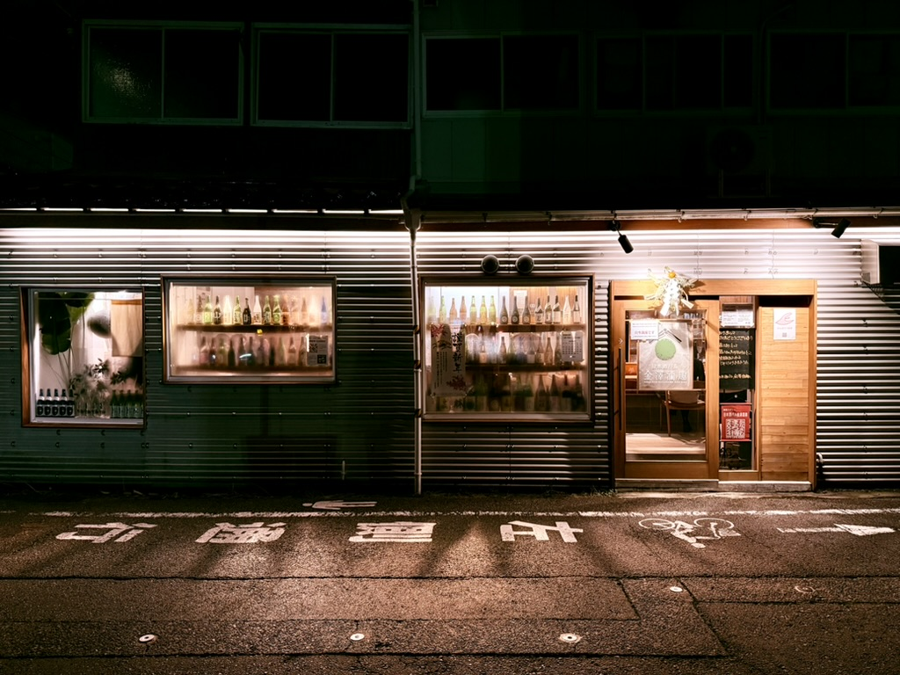
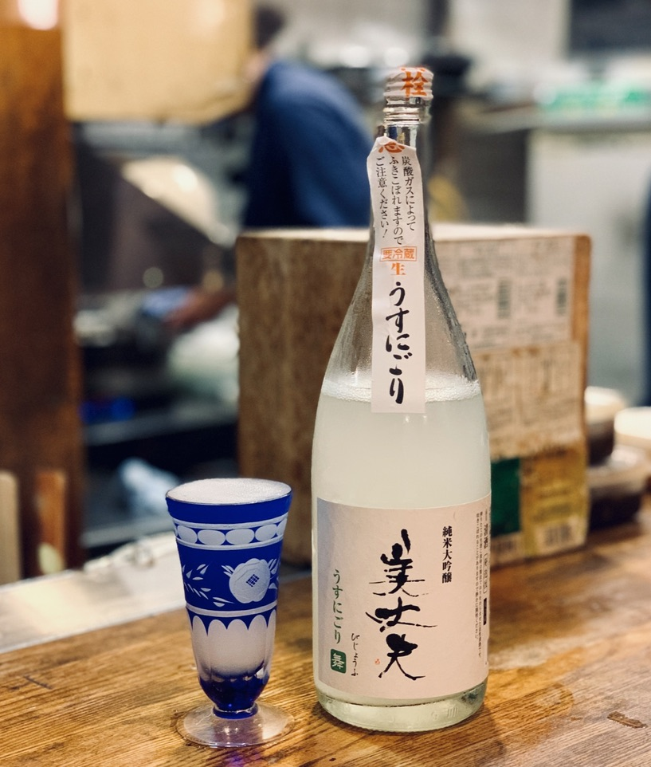

There's a sake bar in Kanazawa with no sign, eight seats, and a former brewer behind the counter who will ask you three questions and pour you something you've never heard of. A basement izakaya in Tokyo turned Michelin away so the regulars could get their seats back.
None of these are first page search results. All of them are the reason to go. We write about the places we'd send a friend to — experiences you can't find, only be shown by someone who knows.

A Kanazawa sake bar run by a former Kikuhime brewer
Silver paneling, two windows of empty bottles, a door that blends in. One counter, no tables, three fridges, and Hiromoto Yamagami — who used to brew at Kikuhime before opening the place.

Twenty-four hours in Kanazawa, ordered around the sake
Coffee at Sunny Bell. Ōmichō market before the crowds. Bib Gourmand ramen at Shizenha Kagura. Afternoon tasting at the Noguchi Naohiko booth. Higashi Chaya on foot. Sushi Kinari for dinner. End at Shu Shu, counter only, standing room by 10.

Okagesan kept the Michelin star and stopped letting Michelin in
A basement in Yotsuya, next to a whiskey-and-karaoke bar, sharing a bathroom. Twenty-four seats, one sitting, 6 to 10. The water on your table is shipped from the brewery whose sake you're drinking that night.